Cátedra 5: Distribución de Maxwell
Distribución estadística de velocidades en un gas ideal en equilibrio: no todas las partículas tienen la misma rapidez, sino que siguen una distribución característica que depende de $T$ y $m$.
Temas que cubre
- Distribución de Maxwell para la rapidez: $f(v)$
- Distribución de Maxwell-Boltzmann para una componente: $f(v_x)$
- Tres velocidades características: $v_p$, $\langle v \rangle$, $v_{\text{rms}}$
- Efecto de la temperatura: la distribución se ensancha al subir $T$
- Efecto de la masa: partículas más ligeras son más rápidas
- Consecuencias: efusión, separación isotópica, reacciones nucleares en estrellas
Conceptos clave
Distribución de velocidades
En equilibrio, las partículas no tienen todas la misma rapidez. La distribución de Maxwell $f(v)$ da la fracción de partículas con rapidez entre $v$ y $v+dv$. Es una gaussiana en 3D proyectada al espacio de rapideces.
Tres velocidades características
La velocidad más probable $v_p$ (máximo de $f(v)$), la velocidad media $\langle v \rangle$ y la velocidad cuadrática media $v_{\text{rms}}$ son distintas: $v_p < \langle v\rangle < v_{\text{rms}}$.
Efusión de gases
La ley de Graham: la tasa de efusión de un gas a través de un orificio pequeño es inversamente proporcional a $\sqrt{m}$. El gas más liviano escapa más rápido. Esto se usa para separar isótopos (p.ej. $^{235}$U y $^{238}$U).
Cola de alta energía
La distribución de Maxwell tiene una cola hacia velocidades altas. Aunque pocas partículas tienen esa energía, son cruciales: en el interior de las estrellas son las que tienen suficiente energía cinética para superar la barrera de Coulomb y fusionarse.
Fórmulas fundamentales




Qué hay que entender
- $f(v)$ no es la velocidad de las partículas: es la distribución de probabilidad de encontrar una partícula con esa rapidez.
- El factor $v^2$ hace que $f(0) = 0$: casi ninguna partícula está exactamente en reposo.
- Al subir $T$: la distribución se aplana y se desplaza a velocidades mayores, pero sigue normalizada.
- La temperatura entra en la forma $mv^2/(2k_BT)$: lo relevante es la energía cinética comparada con $k_BT$.
- La cola a altas velocidades es exponencial: crece lentamente en escala logarítmica. En astrofísica, esa cola es la que permite que el Sol brille.